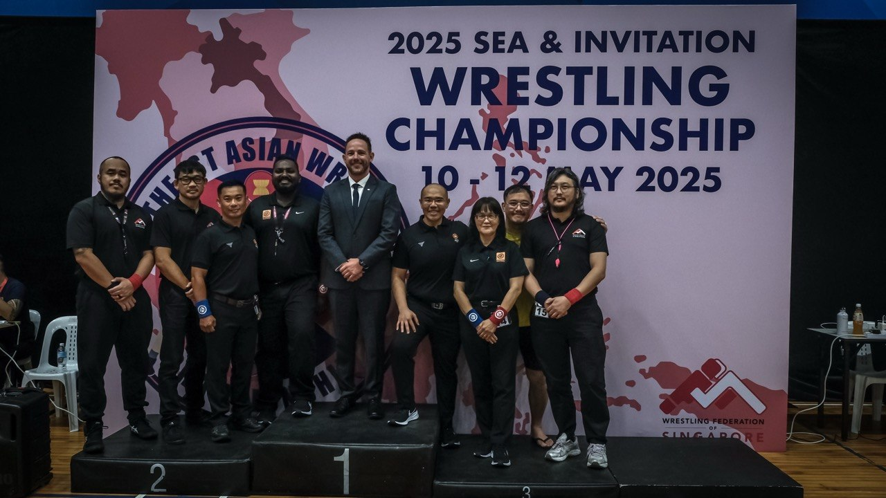

Wrestling

Singapore, May 2025
- National Open & Team Trials 2023: Official (Score Keeper)
- Beach Wrestling World Series, Singapore 2023: Volunteer (OC Staff, Liaison Officer)
- 17th Interclub Grappling Meet: Grappling Official (Judge)
- Leng Kee CC Event 2023: Volunteer
- National Open & Team Trials 2024: Official (Judge)
- Pesta Sukan 2024: Official (Judge)
- 18th Interclub Grappling Meet: Grappling Official
- National Open & Team Trials 2025: Official (Judge)
- 🏆 ~ Southeast Asian & Invitation Wrestling Championship May 2025: National Referee (see photo above)
- Pesta Sukan 2025: Official (Referee, Judge)
- 19th Interclub Meet Nov 2025: Official (Referee, Judge and Chairman)
- National Open & Team Trials Mar 2026: Official (Referee, Judge and Chairman)